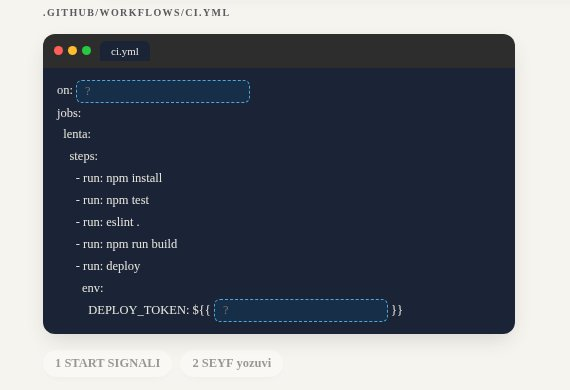
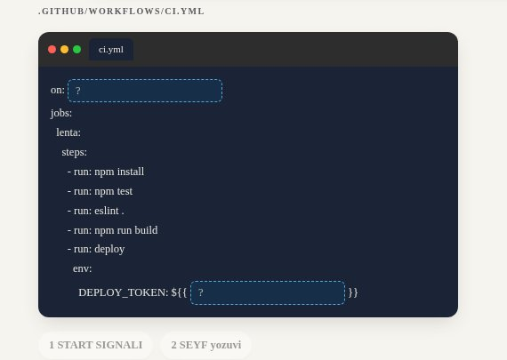
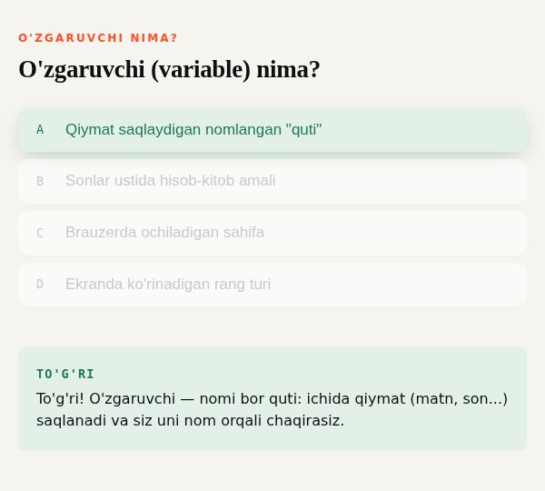
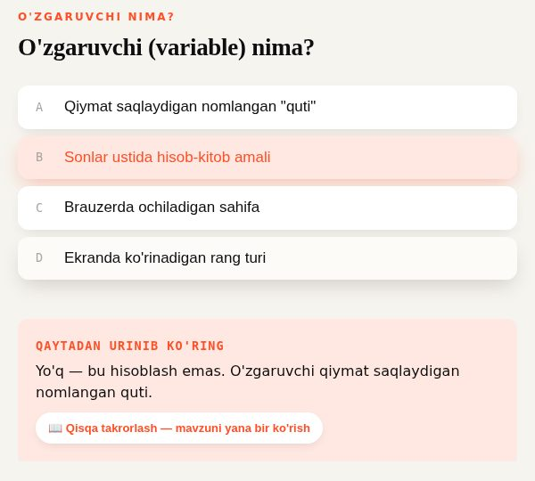
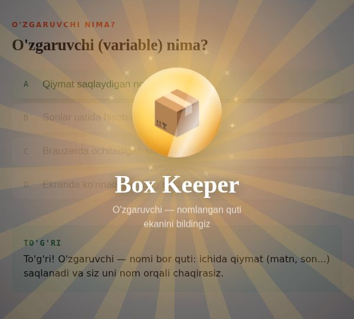
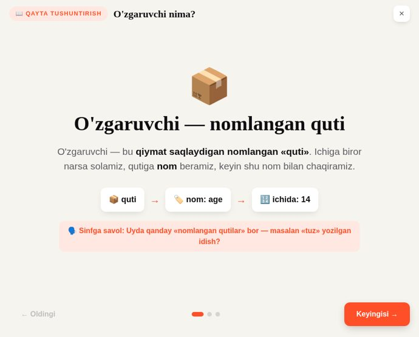
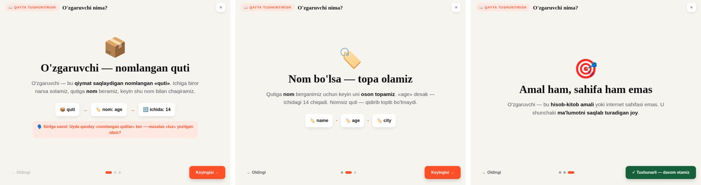

Paket yuklash-2026-09-30 tayyor va tekshirilgan, uni bugun yuklash mumkin. Oxirgi tekshiruvda ikki narsa chiqdi: LMS sinflari bilan to'qnashuvni topadigan vosita LMS CSS qoidalarining yarmini ko'rmagan ekan. Tuzatilgan nusxasi bitta darsda kichik ko'rinish farqini topdi. Ikkalasi ham bugungi yuklashni to'xtatmaydi.
LMS darsni o'z sahifasida chizadi, shuning uchun LMS'ning CSS sinflari darsga ham ta'sir qiladi. 29.09 dagi «qatorlar ustma-ust» bugi shundan chiqqan edi. Bunday sinflarni topadigan vosita CSS faylini o'qishda har ikkinchi qoidani o'tkazib yuborgan. Tuzatilgan nusxasini bugungi paketda yurgizdim, har bir moslikni brauzerda LMS CSS bilan o'lchadim.
Vosita ulardan faqat 401 tasini ko'rgan.
25.09 paketida 90 edi: 14 tasi tuzatilgan fixed.
1 tasi faqat ko'rinishni o'zgartiradi (S13).
| Sinf | Qayerda | LMS CSS bilan o'lchov |
|---|---|---|
| visible | 70 dars | farq yo'q · javob izohi LMS bilan ham, usiz ham bir xil ochiladi |
| block | 4-Modul 11 · Auth | farq yo'q · dars qoidasi ustun, qo'riqchi kartasi joyida |
| inline | 4c-Modul 04 | farq yo'q · dars qoidasi kuchliroq |
| static | 4-Modul 12 · PM | farq yo'q · bu qiymat baribir sukut bo'yicha turadi |
| block, inline | 1-Modul 08 · CSS 2 | soxta signal · sinf emas, tugma holatini solishtiradigan so'z |
| code-line | 4c-Modul 04 | ko'rinish · kod oynasi 15 px uzayadi, pastda S13 |
4c-Modul 04, «Oxirgi qadam: o'zingiz to'ldiring» ekrani. LMS'da ham code-line degan sinf bor, u qatorga oraliq beradi. Dars ham shu nomni ishlatadi, shuning uchun kiritish maydoni bor ikki qator 23 px o'rniga 27 px bo'ladi, oyna 267 px dan 282 px ga uzayadi. Hech narsa ustma-ust tushmaydi va kesilmaydi, maydonlarga yozish ishlaydi. Bu farq LMS'dagi 25.09 faylida ham bor.


268 izoh, 69 darsda. 158 tasi 100 belgidan uzun (2–3 qator). 131 tasi yana «To'g'ri!» deb boshlanadi, tepada esa allaqachon «TO'G'RI» turibdi.
840 izoh. Kamida 43 tasi to'g'ri javobni so'zma-so'z aytib qo'yadi, shunda qayta urinish ko'chirib bosishga aylanadi.
Har recapda ~71 so'z. Har kartada «Sinfga savol» bor, uyda yolg'iz o'qiyotgan o'quvchiga u keraksiz.




Ball, test kalitlari va server o'zgarmaydi, faqat ko'rinadigan matn qisqaradi (uz va ru). PM uyga vazifalariga tegilmaydi.
Hozir: tugma «📖 Qisqa takrorlash — mavzuni yana bir ko'rish», ichida 3 karta, har birida 2 qator matn, zanjir va «Sinfga savol».

Hali tanlanmadi.